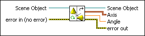
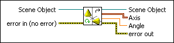

Get Rotation VI
Owning Palette: Transformations VIs
Requires: Full Development System
Returns the rotation applied to an object in a 3D scene in axis-angle form.

 Add to the block diagram Add to the block diagram |
 Find on the palette Find on the palette |
Owning Palette: Transformations VIs
Requires: Full Development System
Returns the rotation applied to an object in a 3D scene in axis-angle form.

| Add to the block diagram |
Find on the palette |
 |
Scene Object is the reference to the object whose rotation you want to get. | ||||||
 |
error in describes error conditions that occur before this node runs. This input provides standard error in functionality. | ||||||
 |
Scene Object returns the Scene Object input. | ||||||
 |
Axis returns the x, y, and z coordinates that define the axis around which the rotation occurs.
| ||||||
 |
Angle returns the angle of the rotation around the axis. | ||||||
 |
error out contains error information. This output provides standard error out functionality. |